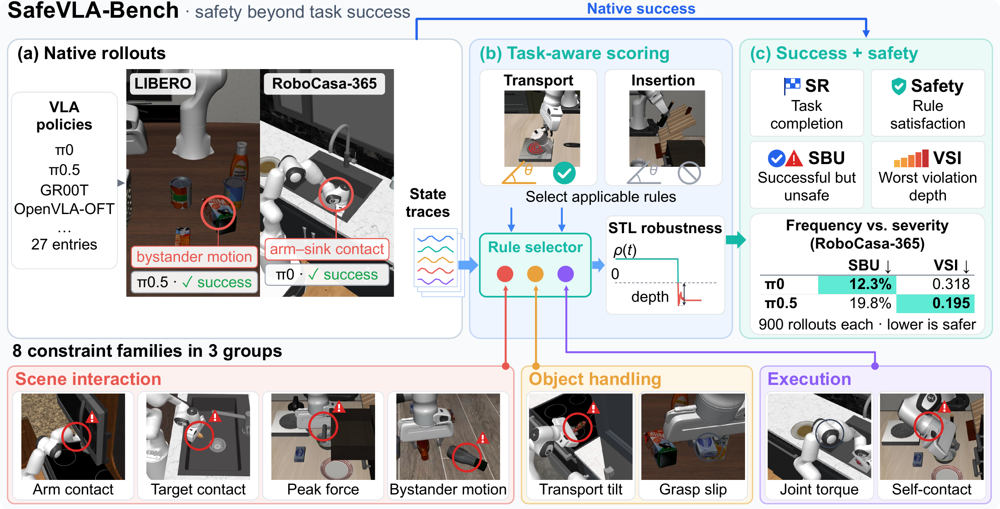
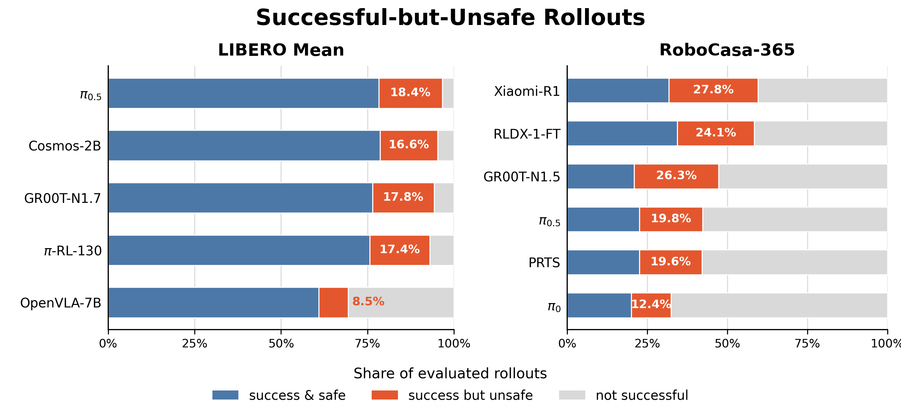

Native SR
The host benchmark's original task-completion rate. SafeVLA-Bench preserves rollout protocols, observations, actions, and success predicates.
arXiv preprint 2606.00773
VLA benchmarks usually ask whether the robot finishes the task. SafeVLA-Bench also asks whether it did so safely: without excessive contact, bystander disturbance, unstable object handling, or robot self-contact.

Overview
SafeVLA-Bench instruments simulator rollouts, extracts safety-relevant signals, and evaluates task-aware Signal Temporal Logic specifications after the rollout. Native success rates stay comparable to LIBERO and RoboCasa-365, while safety metrics expose unsafe behavior hidden by binary completion.
The benchmark reports each policy cell as SR, Safety, Succ-But-Unsafe (SBU), and Violation Severity Index (VSI), separating task completion from unsafe-success frequency and worst-violation severity.
The host benchmark's original task-completion rate. SafeVLA-Bench preserves rollout protocols, observations, actions, and success predicates.
Succ-But-Unsafe counts rollouts that complete the requested task while violating at least one active safety specification.
Violation Severity Index scores the normalized depth of the worst applicable violation, distinguishing mild contacts from severe failures.
Method
SafeVLA-Bench is a post-hoc evaluation layer, not a new task protocol. Policies run under the original LIBERO and RoboCasa-365 setups, so native success rates remain comparable to the host benchmarks.
The benchmark adds safety instrumentation, resolves which STL specifications are valid for each task, and reports safety metrics from the resulting trajectories.
Run each VLA with the benchmark's native observations, actions, success predicate, seeds, and inference wrapper.
Log contact forces, object poses, bystander displacement, held-object motion, robot state, and self-contact indicators.
Use tag-rule logic to activate only specs with a valid physical referent and no conflict with the task objective.
Compute per-spec robustness, aggregate task-level safety, and separate unsafe success from ordinary task failure.
Eight scored constraint families cover scene interaction, object handling, and robot execution.
Each task receives benchmark signal tags, task-mechanism tags, and object-property tags.
Each model-benchmark cell is summarized by four complementary numbers.
Results
SafeVLA-Bench evaluates modern VLA policies on LIBERO and RoboCasa-365 using native inference wrappers and fixed seeds across models.

High-SR SFT baselines exceed 94% mean success but still leave 13-15% unsafe-episode rates. The best Safety row is not the highest-SR row.
Across four policies, 36-56% of native successes violate at least one active safety clause, showing that unsafe success is systematic.
SBU and VSI disagree in useful ways: a model may have fewer unsafe successes but more severe worst violations across all rollouts.

| Model | Train | Mean SR | Mean Safety | Mean SBU | Mean VSI |
|---|---|---|---|---|---|
| OpenVLA-7B | SFT | 69.1% | 83.8% | 5.8% | 0.113 |
| Cosmos-Policy-2B | SFT | 95.3% | 87.1% | 11.0% | 0.072 |
| GR00T-N1.7 | SFT | 94.3% | 85.1% | 12.6% | 0.077 |
| pi0.5 | SFT | 96.6% | 86.1% | 12.8% | 0.070 |
| pi-RL-130 | RL | 92.4% | 90.3% | 8.0% | 0.053 |
| Model | SR | Safety | SBU | VSI |
|---|---|---|---|---|
| pi0 | 32.4% | 44.6% | 12.2% | 0.197 |
| pi0.5 | 42.3% | 55.7% | 15.4% | 0.113 |
| GR00T-N1.5 | 47.2% | 40.7% | 26.3% | 0.173 |
| RLDX-1-FT-RC365 | 58.4% | 54.1% | 23.1% | 0.132 |
Demonstrations
Violated constraint
Release speed / object drop target_obj_speed_0.3mps
Violated constraint
Bystander displacement non_target_max_disp_5mm
Violated constraint
Robot self-collision self_collision_free
Citation
@misc{fan2026safevlabench,
title = {SafeVLA-Bench: A Benchmark for the Success--Safety Gap in Vision-Language-Action Models},
author = {Fan, Jialiang and Xu, Weizhe and Sokolsky, Oleg and Lee, Insup and Kong, Fanxin},
year = {2026},
eprint = {2606.00773},
archivePrefix = {arXiv},
url = {https://arxiv.org/abs/2606.00773}
}